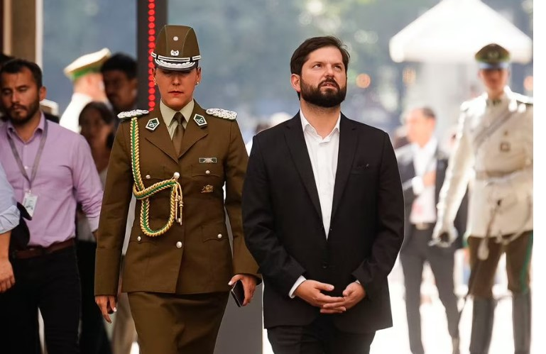

|
El presidente de Chile, Gabriel Boric, ha anunciado que acompañará a Carabineros “personalmente en procedimientos” a fin de que “que quede claro el apoyo que existe y
dónde está la autoridad”. El mandatario lo informó desde el Palacio de La Moneda, horas después de reunirse con la familia de la sargento Rita Olivares, asesinada de un
disparo por un grupo de delincuentes la madrugada del domingo en Quilpué, en la Región de Valparaíso. El crimen ha provocado conmoción pública: es el segundo homicidio
de un policía en lo que va de marzo. La Cámara de Diputados y el Senado resolvieron suspender su semana distrital, en la que los parlamentarios visitan las zonas por
las que fueron electos, para dedicarse a sacar adelante 15 proyectos de ley sobre seguridad. Acompañado por el general director de Carabineros, Ricardo Yáñez, y a sus
ministras del Interior y Seguridad Pública, Carolina Tohá, y de la Mujer y Equidad de Género, Antonia Orellana, Boric señaló: “Junto al subsecretario del Interior,
Manuel Monsalve, y a la ministra del Interior, estaré acompañado a Carabineros en procedimientos, para que quede claro el apoyo que existe y dónde está la autoridad
. Son los delincuentes los que tienen que sentir miedo, no las instituciones ni menos la ciudadanía honesta y trabajadora, que es la gran mayoría”.
|
|
|
|
El asesinato de Olivares, la primera mujer de Carabineros que fallece en un operativo, se da en un contexto donde la seguridad es la principal preocupación de la ciudadanía,
según la encuesta del Centro de Estudios Públicos (CEP) de enero pasado. Hay un nuevo fenómeno de delincuencia organizada, que ha provocado que los homicidios registren
un alza de un 30%, como un incremento de la circulación de armas en poder de bandas criminales. Aunque no resulta evidente qué implicará acompañar “personalmente” a
Carabineros en los procedimientos policiales, el presidente Boric parece dispuesto a ver con sus propios ojos lo que ocurre en materia de delincuencia, estar donde ocurren
los hechos de violencia y mejorar la gestión del Gobierno en la principal preocupación de la ciudadanía, la seguridad pública. “Que las personas vivan y se sientan seguras
nos parece un derecho habilitante para el ejercicio de otras libertades”, escribió el mandatario en una columna de opinión publicada este lunes en EL PAÍS.
El subsecretario Monsalve, tras el debate que se ha producido con el anuncio de Boric, ha explicado este martes que “la principal intención del presidente es visibilizar el
trabajo”.
La sargento Olivares era madre de dos hijos, de 12 y 15. Tenía 43 años y llevaba más de dos décadas en Carabineros. Fue abatida apenas llegó en su patrulla tras el llamado
de vecinos y, de acuerdo con los peritajes, la banda de asaltantes a lo menos disparó 30 tiros. Hasta ahora hay tres detenidos y uno de ellos —Edward Fuenzalida, de 28
años— tiene un largo prontuario y se había fugado en julio de 2021 de la cárcel de Valparaíso. El segundo presuntamente involucrado en el crimen, Miguel Acevedo, había
salido en libertad provisional hace siete meses. Conducía un automóvil con encargo por robo, pero salió en libertad tras el pago de una fianza de aproximadamente 990
dólares. El tercer detenido se trata de Luis Martínez, de 27 años. El hombre fue uno de los 1700 beneficiados por un indulto general del Gobierno de Sebastián Piñera en
medio de la crisis de la covid-19, en abril de 2020. Tenía cumplida dos tercios de su pena por robo con violencia reiterado. Este lunes, familiares de policías asesinados
enviaron duros mensajes a las actuales autoridades.
|
|

|
|
La sargento Olivares era madre de dos hijos, de 12 y 15. Tenía 43 años y llevaba más de dos décadas en Carabineros. Fue abatida apenas llegó en su patrulla tras el llamado
de vecinos y, de acuerdo con los peritajes, la banda de asaltantes a lo menos disparó 30 tiros. Hasta ahora hay tres detenidos y uno de ellos —Edward Fuenzalida, de 28
años— tiene un largo prontuario y se había fugado en julio de 2021 de la cárcel de Valparaíso. El segundo presuntamente involucrado en el crimen, Miguel Acevedo, había
salido en libertad provisional hace siete meses. Conducía un automóvil con encargo por robo, pero salió en libertad tras el pago de una fianza de aproximadamente 990
dólares. El tercer detenido se trata de Luis Martínez, de 27 años. El hombre fue uno de los 1700 beneficiados por un indulto general del Gobierno de Sebastián Piñera en
medio de la crisis de la covid-19, en abril de 2020. Tenía cumplida dos tercios de su pena por robo con violencia reiterado. Este lunes, familiares de policías asesinados
enviaron duros mensajes a las actuales autoridades.
El hermano de la carabinera que falleció el domingo, Raimundo Olivares, dijo que “el presidente no ha hecho lo que
tiene que hacer. La violencia está desatada. El Gobierno le ha dado muchas facilidades a la delincuencia”. Y agregó: “Los carabineros siguen sufriendo. Les pegan,
andan con armas de bajo calibre mientras los delincuentes con metralleta”. Hoy también se pronunciaron los familiares del sargento Carlos Retamal, un carabinero que
fue asesinado por el golpe de un fierro el 11 de octubre de 2022 en San Antonio, ciudad portuaria ubicada a unos 100 kilómetros de Santiago, mientras fiscalizaba una
carrera clandestina de automóviles. La viuda de Retamal, Marly Victoriano, escribió una carta tras conocer el crimen de la sargento en Quilpué. “Ha fallecido una nueva
víctima de la inacción y la negligencia de darle protección y herramientas necesarias a los carabineros”, dijo. Y exigió al presidente Boric poner discusión inmediata
a la llamada ley Retamal, una iniciativa presentada por la oposición que busca aumentar las penas en contra de quienes cometan delitos en contra de las fuerzas
policiales chilenas. Los indultos otorgados a fines de 2022 por el presidente Boric a un grupo de 13 condenados, 12 de ellos por delitos cometidos en el estallido
social de 2019, han complejizado las conversaciones de la clase política para llegar a acuerdos en materia de seguridad. La decisión del mandatario, que hace unos
días fue respaldada por el Tribunal Constitucional, sigue siendo objeto de debate y marca la conversación pública en torno a la seguridad.
Fue una señal delicada
con respecto al compromiso de La Moneda contra la delincuencia y, entre otras consecuencias, paralizó las negociaciones de Tohá con la oposición en torno a una
agenda transversal de seguridad pública. Entre los excarcelados se encontraba Jordano Jesús Santander Riquelme, condenado a siete años de cárcel y tres penas
remitidas tras atacar en marzo de 2020 un cuartel de la policía en San Antonio, en la misma Región de Valparaíso donde fue asesinada la sargento. Fue declarado
culpable por el homicidio frustrado de un policía al que intentó atropellar cuando el funcionario trató de detenerlo.
|
|
|